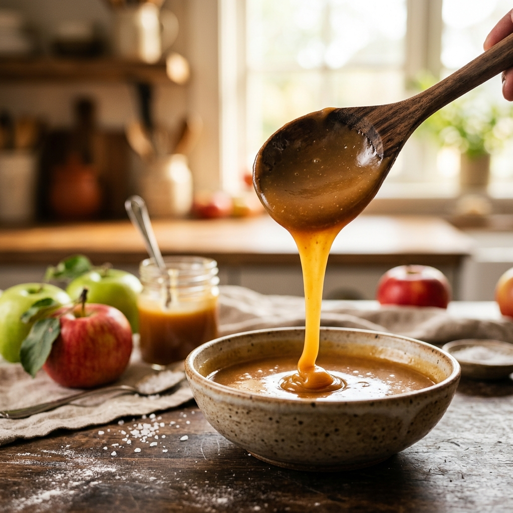

Caramel de Pomme
Vidéo de présentation
À propos du projet
Le Caramel de Pomme Dieppois est une spécialité artisanale normande emblématique, élaborée avec passion par les salariés en situation de handicap des Ateliers d'Etran (ESAT de l'APEI de la région dieppoise). Ce projet met en lumière un savoir-faire local unique, alliant gourmandise, tradition et insertion sociale par le travail.
Cette vidéo de présentation dynamique et gourmande a été réalisée pour promouvoir le Caramel de Pomme Dieppois auprès du grand public, des épiceries fines et des réseaux de distribution. Elle retrace les différentes étapes de fabrication artisanale du caramel (cuisson, mise en pot, étiquetage) tout en valorisant l'engagement et la fierté des équipes au sein de l'atelier.
À travers une captation soignée des textures et des gestes précis des artisans, la vidéo allie esthétique publicitaire et dimension humaine. Le montage met en avant la qualité des ingrédients locaux et le dynamisme de cette production locale reconnue, renforçant l'identité de marque du produit et son impact social positif.
Voir la vidéo
Processus créatif
Immersion & structure
Découverte des ateliers de fabrication d'Etran, définition du conducteur et des plans-clés pour sublimer le produit.
Captation & gestuelle
Captation des gestes méticuleux des artisans et des textures onctueuses du caramel sous un éclairage flatteur.
Montage rythmé
Assemblage dynamique sur Premiere Pro avec des transitions fluides pour maintenir l'intérêt et souligner chaque étape.
Étalonnage & finitions
Travail minutieux sur l'étalonnage pour faire ressortir les teintes chaudes et dorées du caramel, et finitions épurées pour assurer un rendu sobre et fluide.